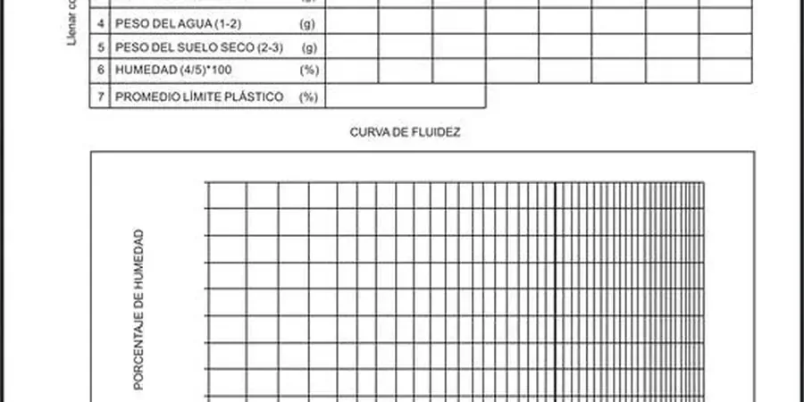

In Airdrie, the performance of slopes and retaining structures is shaped by glacial till, clay-rich soils, and rapid urban expansion. Our Slopes & Walls expertise addresses these local ground conditions through rigorous analysis aligned with the National Building Code of Canada and provincial geotechnical standards. We integrate slope stability analysis to evaluate long-term equilibrium and retaining wall design for both temporary and permanent earth retention solutions across the city’s residential and commercial developments.
These services are essential for residential subdivisions abutting escarpments, infrastructure corridors, and commercial cut-fill operations. When existing slopes show signs of distress, a targeted slope failure analysis identifies failure mechanisms and guides remediation. By combining subsurface investigation with advanced modeling, we deliver safe, code-compliant designs that manage lateral earth pressures and groundwater effectively in Airdrie’s variable terrain.

A plasticity index above 25 in Airdrie's glacial till almost always requires a deeper foundation and a moisture barrier to prevent heave.
Methodology applied in Airdrie
Risks and considerations in Airdrie
The most common mistake we see in Airdrie is relying only on visual classification for clay soils. A contractor looks at a brown, hard chunk of till and assumes it is stable. Then spring melt arrives, the clay absorbs water, and the plasticity index kicks in. We have seen foundation walls crack and garage slabs lift because nobody ran the Atterberg limits. If the PI is over 25, the soil can expand enough to move a 4-inch slab. Shrink-swell cycles in Airdrie's lacustrine deposits cause differential settlement that is expensive to fix. Testing before construction costs a fraction of a single repair.
Our services
We offer a full suite of soil testing services in Airdrie, from field sampling to lab analysis. The Atterberg limits service is part of our broader geotechnical package.
Atterberg Limits (LL, PL, PI)
Full CSA A23.2-2A testing on disturbed samples. Includes liquid limit by Casagrande cup, plastic limit by thread rolling, and plasticity index calculation. Results in 5–7 business days.
Moisture Content & Dry Density
Oven-dry method per ASTM D2216 (CFEM Ch 4) (CFEM Ch 4) (CFEM Ch 4) (CFEM Ch 4) (CFEM Ch 4). Measured at multiple depths to correlate with Atterberg limits and assess swelling potential in the field.
Soil Classification (USCS & AASHTO)
We integrate Atterberg data with grain-size analysis to classify the soil per USCS (CFEM (Canadian Foundation Engineering Manual)) and AASHTO M 145. Critical for pavement and foundation design.
Expansive Soil Report
Combined Atterberg limits, swell-consolidation, and suction data. We provide a risk rating (low / moderate / high) and foundation recommendations specific to Airdrie's clay deposits.
Frequently asked questions
What is the difference between liquid limit and plastic limit?
The liquid limit (LL) is the moisture content where soil changes from a plastic to a liquid state — measured with the Casagrande cup. The plastic limit (PL) is the moisture where soil crumbles when rolled into a 3 mm thread. The plasticity index (PI = LL - PL) tells you how much water the clay can absorb before losing strength.
How much does Atterberg limits testing cost in Airdrie?
For a standard set of Atterberg limits on a single sample, the cost in Airdrie ranges from CA$100 to CA$130. This includes liquid limit, plastic limit, and plasticity index. Bulk testing or multiple depths may lower the per-sample rate.
Why do I need Atterberg limits for a residential basement in Airdrie?
Airdrie's glacial till and lacustrine clay have moderate to high shrink-swell potential. Without Atterberg limits, you risk differential heave that cracks basement walls and lifts floor slabs. The NBCC 2020 requires foundation design to account for expansive soils when the plasticity index exceeds 25.